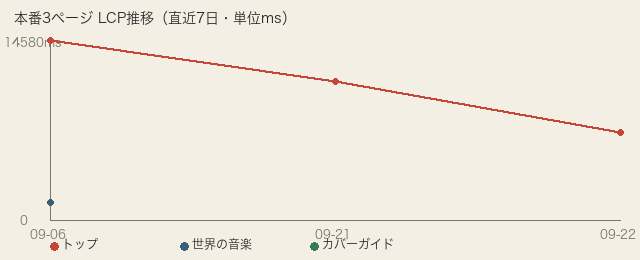

| 確認項目 | 結果 |
|---|---|
| 毎晩の自動計測(launchd) | 登録済み(3:20・com.tamago.tamago-shinchoku.perf-watch) |
| LCPが常にnullになるバグ | 発見・修正済み(Tracingドメイン方式に切替) |
| 悪化を10%以上検知したら自動通知 | 逆テスト14件PASS+擬似データでdispatch_outbox.jsonlへの実配線をエンドツーエンド確認 |
| 同じ日に2回動いても壊れない(冪等性) | 確認済み(--forceを付けない限り2重記録しない) |
| 直近7日の推移を進捗表に表示 | 画像で表示(今日が1日目のため今は1点のみ・今後毎晩積み上がる) |